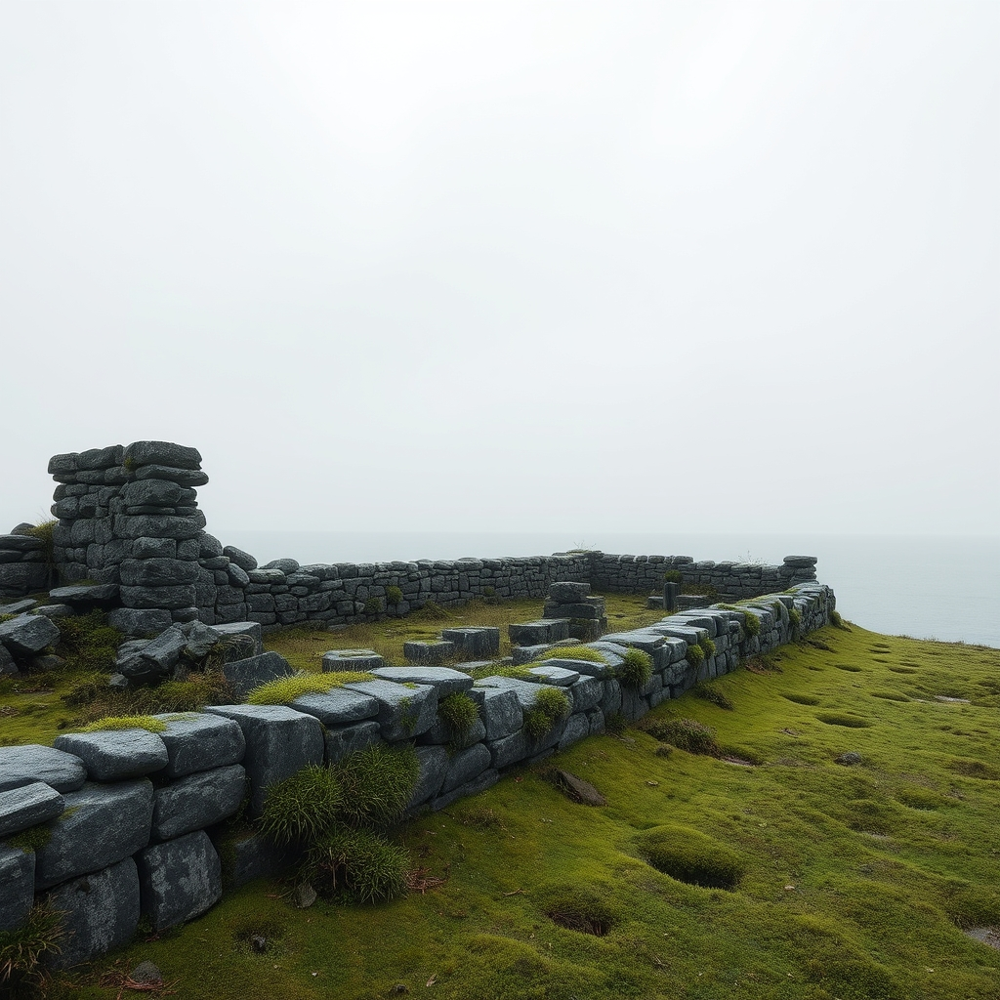
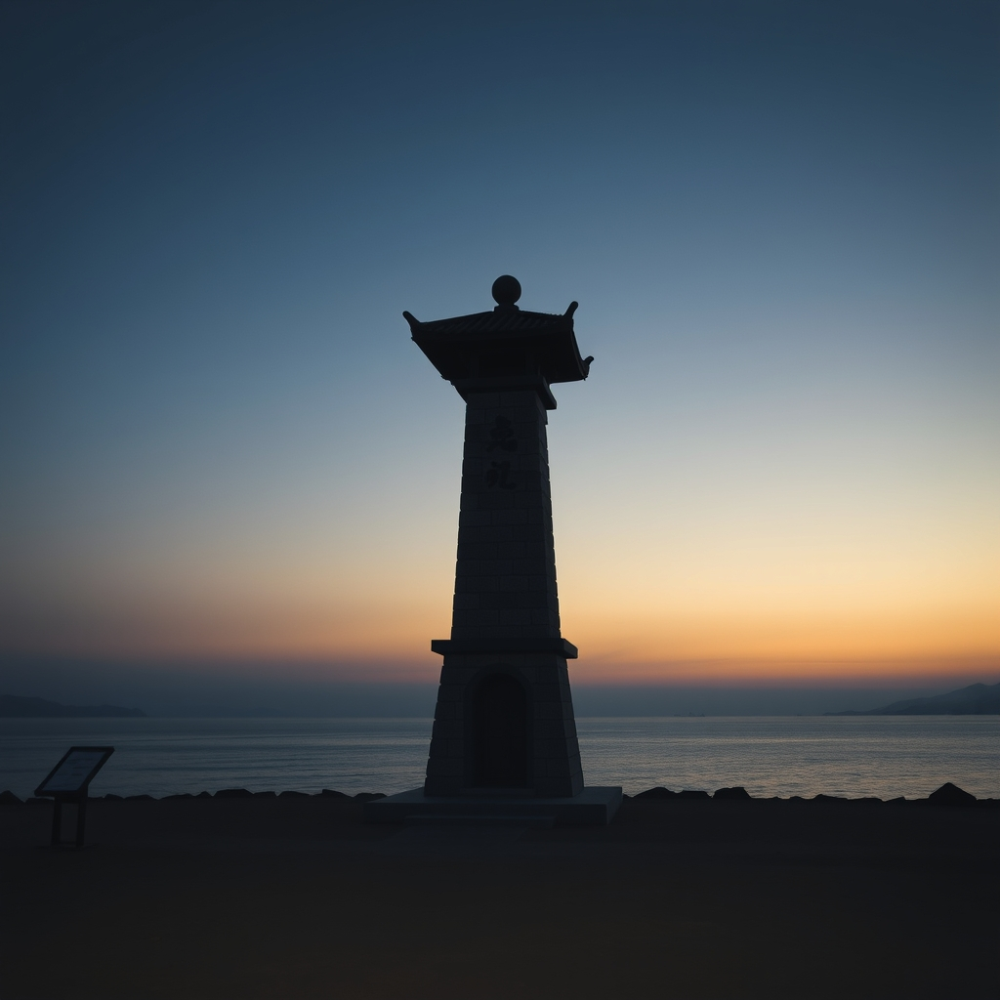

제주시 화북동 바닷가에는 지금도 집터와 돌담이 남아 있는 곤을동이라는 마을 터가 있습니다. 700년 넘게 사람이 살아온 이 마을은 왜 지금 '잃어버린 마을'이라고 불리게 되었을까요?
On the coast of Hwabuk-dong, Jeju City, stands the site of a village called Goneul-dong, where house foundations and stone walls still remain today. Why is this village, lived in for over 700 years, now called "the lost village"?
곤을동은 화북천이 바다와 만나는 자리에 있던 마을로, 고려 시대 기록에도 이름이 나올 만큼 700년이 넘는 오래된 마을이었습니다. 4·3이 일어나기 전에는 화북천의 두 지류를 사이에 두고 안곤을·가운데곤을·밧곤을이라는 세 개의 작은 동네로 나뉘어 있었습니다.
⚖️ 기록마다 다릅니다
| 잃어버린 마을 안내판 | 곤을동 표석 (2003) | |
|---|---|---|
| 마을 규모 | 67가구 (22+17+28) | 43호 |
| 희생자 | 젊은 사람 10여 명 외 | 24명 |
| 1월 4일 시각 | 오후 3~4시경 | 아침 9시경 |
같은 자리에 서 있는 두 안내판의 기록이 서로 다릅니다. 이 페이지는 잃어버린 마을 안내판을 기준으로 서술했으며, 확정 수치는 정부 진상조사보고서 대조 후 갱신될 수 있습니다.
1949년 1월 4일 오후 3~4시경, 국방경비대 제2연대의 한 소대가 곤을동을 포위해 주민들을 모두 모이게 한 뒤 젊은 사람 10여 명을 바닷가로 끌고 가 학살하고, 안곤을과 가운데곤을의 집들을 모두 불태웠습니다. 다음 날인 1월 5일에는 인근 화북초등학교에 가둬두었던 주민 일부를 '영디밑'이라는 바닷가에서 학살하고, 남아 있던 밧곤을의 집들도 모두 불태웠습니다. 그 뒤로 곤을동은 인적이 끊겼습니다. 이렇게 이틀 사이에 최소 10여 명의 주민이 목숨을 잃고 마을 전체가 전소되었으며, 끝내 복구되지 못해 '잃어버린 마을'이 되었습니다.
"토벌대, 제주읍 화북리 곤을동 주민을 이틀에 걸쳐 집단총살" — 제주4·3평화재단, 『제주4·3사건일지』 1949년 1월 4일자 기록 (원문 그대로)"Suppression forces carried out a mass shooting of Goneul-dong residents in Hwabuk-ri, Jeju town, over two days."
— Jeju 4·3 Peace Foundation, Jeju 4·3 Incident Chronicle, entry for January 4, 1949 (translated; Korean original quoted above)
Goneul-dong was a village at the point where Hwabuk Stream meets the sea — old enough to appear in Goryeo-era records, making it more than 700 years old. Before 4·3, it was divided by two branches of the stream into three small hamlets: Angoneul, Gaundegoneul, and Batgoneul [Source: on-site information boards — Lost Village board, Goneul-dong monument, Stone Tower inscription].
⚖️ The records disagree
| "Lost Village" board | Goneul-dong monument (2003) | |
|---|---|---|
| Village size | 67 households (22+17+28) | 43 households |
| Victims | ~10 young people (others unspecified) | 24 people |
| Time on Jan 4 | around 3–4 p.m. | around 9 a.m. |
Two information boards standing at the same site record different figures. This page follows the "Lost Village" board, and the confirmed numbers may be updated once cross-checked against the government's official truth-finding report.
Around 3–4 p.m. on January 4, 1949, one platoon of the 2nd Regiment of the National Defense Constabulary surrounded Goneul-dong, gathered all the villagers, took about 10 young people to the coast and killed them, and burned down every house in Angoneul and Gaundegoneul. The next day, January 5, some residents who had been detained at nearby Hwabuk Elementary School were killed at a coastal spot called Yeondimit, and the remaining houses of Batgoneul were also burned down — after that, Goneul-dong was left uninhabited [Source: on-site information boards]. Over these two days, at least around 10 residents lost their lives and the entire village burned down, and it was never rebuilt, becoming "the lost village" [Source: on-site information boards].
Two months later, on February 27, 1949, 39 people who had been sentenced to death by military tribunal were executed in the same Hwabuk-ri area [Source: Jeju 4·3 Incident Chronicle] — the exact spot is not recorded, but it shows that this area's pain continued even after the village itself had vanished.
지금 곤을동 터에는 '잃어버린 마을' 안내판과 곤을동 표석, 그리고 2004년에 세워진 '4·3 해원 상생 거욱대'가 마을을 기억하고 있습니다. 집은 사라졌지만 집터와 올레(집과 마을길을 잇는 작은 길)는 여전히 남아 있어, 이곳을 지나는 올레 18코스를 걷는 사람들에게 조용히 그날의 이야기를 전하고 있습니다.
Today, at the site of Goneul-dong, the "Lost Village" information board, the Goneul-dong monument, and the "4·3 Reconciliation Stone Tower" built in 2004 keep the village's memory alive [Source: information-board survey report]. The houses are gone, but the house foundations and olle (the small paths linking homes and village roads) remain, quietly telling the story of that day to those who walk Olle Trail Course 18 through here [Source: Olle Trail × 4·3 heritage site course guide].

낭독: AI TTS (Microsoft Heami Desktop, ko-KR, Windows SAPI 오프라인 합성) · 배경음악: 자체 생성 앰비언트 패드 (numpy 합성, 로열티 프리 — 관덕정 페이지와 동일 트랙)(낭독 대비 음량 25%) Narration: AI TTS (Microsoft Heami Desktop, ko-KR, offline synthesis via Windows SAPI — Korean only) · BGM: self-generated ambient pad (synthesized with numpy, royalty-free — same track as the Gwandeokjeong page) (25% volume relative to narration)
🌼 이야기 확인 퀴즈🌼 Story Check Quiz
Q1. 곤을동은 왜 '잃어버린 마을'이라고 불릴까요?Q1. Why is Goneul-dong called "the lost village"?
정답은 B! 1949년 두 차례에 걸쳐 마을이 불태워진 뒤 다시 세워지지 못했어요.The answer is B! The village was burned down twice in 1949 and was never rebuilt.
Q2. 4·3 이전 곤을동은 몇 개의 작은 동네(뜸)로 나뉘어 있었을까요?Q2. Before 4·3, how many small hamlets was Goneul-dong divided into?
정답은 3개! 안곤을·가운데곤을·밧곤을로 나뉘어 있었어요.The answer is 3! It was divided into Angoneul, Gaundegoneul, and Batgoneul.
Q3. 곤을동의 가구 수는 안내판과 표석에 똑같이 적혀 있을까요?Q3. Do the information board and the monument record the same number of households?
정답은 B! 안내판은 67가구, 표석은 43호로 다르게 적혀 있어서, 이 페이지는 두 기록을 모두 보여줘요.The answer is B! The board records 67 households, the monument records 43 — this page shows both.